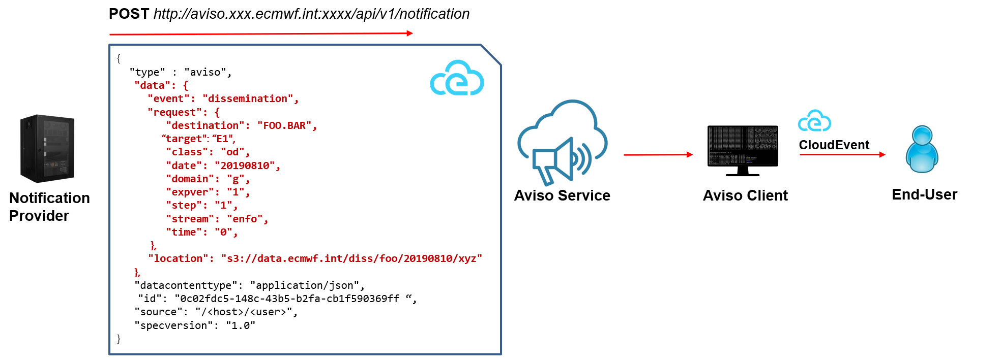

Triggers¶
This section lists the various triggers currently available. Each trigger will result in an independent process executed every time a notification is received.
Echo¶
This is the simplest trigger as it prints the notification to the console output. It is used for testing and it does not accept any extra parameters.
triggers:
- type: echo
Log¶
This trigger logs the event to a log file. It is useful for recording the received event.
triggers:
- type: log
path: testLog.log
Note
The trigger process will fail if the directory does not exist.
Command¶
This trigger allows the user to define a shell command to work with the notification.
triggers:
- type: command
working_dir: $HOME/aviso/examples
command: ./script.sh --date ${request.date} -s ${request.stream}
environment:
STEP: ${request.step}
TIME: "The time is ${request.time}"
commandis the command that will be executed for each notification received. This is a mandatory field.environmentis a user defined list of local variables that will be passed to the command shell. This is an optional field.working_dirdefines the working directory that will be set before executing the command. This is an optional field.
Moreover, the system performs a parameter substitution in the command and environment fields, for every sequence of the pattern:
${name}, it replaces it with the value associated to the corresponding key found in the notification received.${json}, it replaces it with the whole notification formatted as a JSON inline string.${jsonpath}, it replaces it with the file name of a JSON file containing the notification.
A notification is a dictionary whose keys can be used in the parameter substitution mechanism described above. Here an example of a notification:
{
"event": "dissemination",
"request": {
"class": "od",
"date": "20191112",
"destination": "FOO",
"domain": "g",
"expver": "0001",
"step": "001",
"stream": "enfo",
"time": "18",
"target": "E1"
},
"location": "s3://storage.ecmwf.europeanweather.cloud/ecpds/xxx.xx"
}
Post¶
This trigger allows the user to send as HTTP POST message the notification received and formatted accordingly to protocol indicated. Currently the only protocol implemented is the CloudEvent specification. This trigger basically turns Aviso client in a proxy forwarding the notification to the user’s notification system compatible with CloudEvent specification, as shown by the figure below:
Here a basic example of a Post trigger:
triggers:
- type: post
protocol:
type: cloudevent
url: http://my.notification.system/api
This is the basic configuration. More parameters can be specified to customise the CloudEvent message. More info the reference documentation.
The CloudEvent message sent would look like the following:
{
"type" : "aviso", # this is customisable by the user
"data": { # this is aviso specific
"event": "dissemination",
"request": {
"target": "E1",
"class": "od",
"date": "20190810",
"destination": "FOO",
"domain": "g",
"expver": "1",
"step": "1",
"stream": "enfo",
"time": "0",
},
"location": "s3://data.ecmwf.int/diss/foo/bar/20190810/xyz", # location on ceph or s3
},
"datacontenttype": "application/json",
"id": "0c02fdc5-148c-43b5-b2fa-cb1f590369ff", # UUID random generated by aviso
"source": "https://aviso.ecmwf.int", # this is customisable by the user
"specversion": "1.0",
"time": "2020-03-02T13:34:40.245Z", # Timestamp of when this message is created
}
Here a complete example showing how to customise the CloudEvent fields as well as the HTTP headers:
triggers:
- type: post
protocol:
type: cloudevent
url: http://my.notification.system/api
headers:
HTTP_TEST: "test"
timeout: 30
cloudevent:
type: test_cloudevent
source: my_test
Function¶
Differently from the previous triggers, this trigger is not file based. It allows the user to define a Python function to be executed directly by Aviso. This is intended for users that want to integrate Aviso Python API into a workflow or application written in Python.
Below an example of a python script that defines a function to be executed once a notification is received, creates a listener that references to this function trigger and finally passes it to aviso to execute.
from pyaviso import NotificationManager
# define function to be called
def do_something(notification):
print(f"Notification for step {notification['request']['step']} received")
# now do something useful with it ...
# define the trigger
trigger = {"type": "function", "function": do_something}
# create a event listener request that uses that trigger
request = {"class": "od", "stream": "oper", "expver": 1, "domain": "g", "step": 1}
listeners = {"listeners": [{"event": "mars", "request": request, "triggers": [trigger]}]}
# run it
aviso = NotificationManager()
aviso.listen(listeners=listeners)
See Python API for more info on how to use Aviso API.